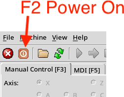

Power on is used to “power the machine on”. This is always off when the system is started, and toggling the E-STOP does not affect this. You can either click on the indicated icon, or use the F2 key to toggle this.
Whenever an error is encountered, the system moves to a powered off state also. It is a good practice to clear the error first (by clicking on the X for the error).